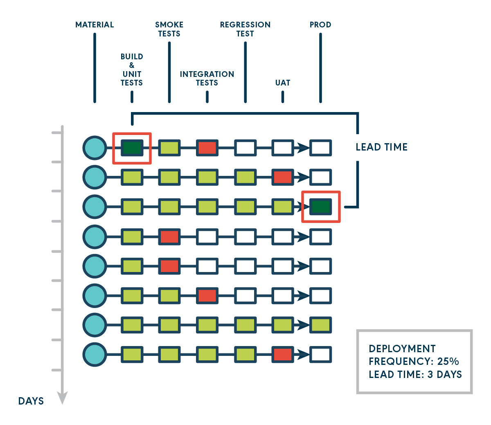
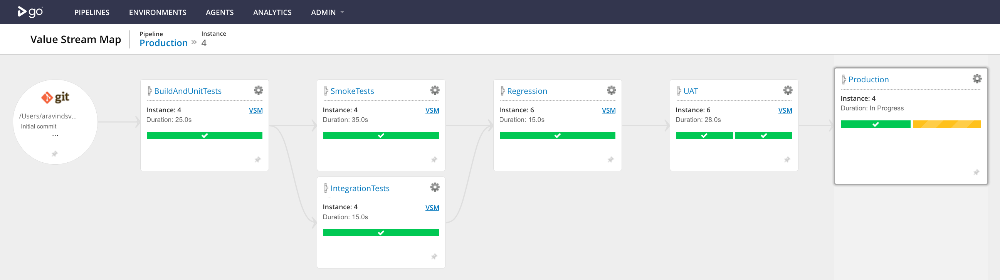
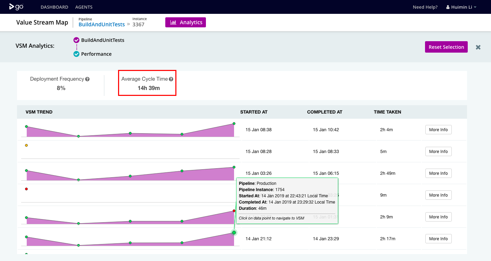
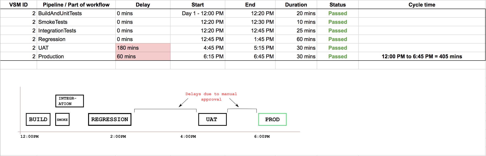

This is the third post in the series - Actionable Continuous Delivery Metrics. In the previous posts, we gave an overview of why and what metrics matter to your CD process as well as an in depth discussion on deployment frequency. In this post, we’ll get deeper into lead time.
What Lead Time Is
Whereas deployment frequency is the number of times deployment happened, lead time for change is the cumulative lapsed time it took from start to deployment. This metric is represented as a duration and it helps answer the question “how long does it take to get from from code commit to production?”
You may see lead time used interchangeably with cycle time, and there is a lot of confusion around what these two terms mean. By definition, the lead time clock starts when the feature request is made and ends at delivery, while the cycle time clock starts when work begins on the request and ends when the item is ready for delivery. We are not going to distinguish these two terms in this post. We think the important thing is that you clearly define what you mean, and be consistent with your definition. In our context, we suggest avoid saying lead time or cycle time without qualifying the starting point and ending point.

In the diagram above, we calculate time from a commit (at the start of a CD pipeline) until when that code commit goes to production (at the end of the CD pipeline). Although other points in the CD pipeline have happened multiple times, it was only after three days that the deployment happened, so we calculate the lead time for that commit as three days.
Why Lead Time is Important
Lead time is a key element of lean theory. Focusing on reducing lead time will allow you to look at your process as a whole and understand the slowest parts. If teams and organizations only concentrated on lowering lead time they would improve and add more value to their organization.
Lead time helps you answer questions like "When will this be done? If we start now when can we get it to production? Can we deliver this next week?" It helps inform business decisions and helps with planning.
Finally, we recommend only considering the “delivery” part when calculating lead time for your CD process. If you define the start time from first line of code, and remove the “fuzzy front-end”, which include activities like requirement gathering, system analysis, prioritization etc, it is a simple and very practical metric to calculate.
An Example: How to Use Lead Time
We will continue with the hypothetical scenario we used in part 2 of the series, in this scenario, the development team received the complaint from their stakeholders that they didn’t get value very often.

This picture above is a quick refresher of this team’s CD pipelines represented in GoCD’s Value Stream Map (VSM). It includes some unit tests, integration tests and smoke tests in parallel, and then the regression tests. At the end, there are User Acceptance Tests (UAT) and a production deployment.
In the previous post, we have found out the deployment frequency is as low as 8%. Here, GoCD enterprise analytics plugin can help find out what parts of the CD pipeline are causing this low deployment frequency.
In the screenshots below, you can see the average cycle time from BuildAndUnitTests to Production is 33m.

When you drill down into each pipeline, you can see these details with wait times (shown in gray), and run times (shown in purple) towards production with each stage shown separately. From there, you can identify your slowest steps.

This process can also be done manually, or with another tool. When you track the time and plot the different parts of the workflow, you can achieve similar results. The example below is a possible representation of the process, when done outside of GoCD. You can see there are some long-running parts of your pipeline (as in “Regression” here) and some long delays due to manual approvals.

As you can see from our example, with lead time metric and the supporting details, you can identify your problematic steps: steps that are slow to complete and require lots of wait time will lead to overall low deployment frequency. From here, we recommend
- focusing on the slowest steps first- that is what will give you the most gains.
- converting manual approvals into automated ones, which will increase your level of confidence in the tests and automation.
- Rewriting the tests in the slowest steps, if possible.
Sometimes, just focusing on optimizing a number of slow steps is not enough. Consider bigger changes to your pipelines. Start with drawing the value stream map and truly understanding the dependencies of your process. Identify opportunities to parallelize, rearrange your tests to start the slow-running tests earlier on in the process.
Summary
In this post, we discussed what lead time is, why it is important, and how to act on long lead time. As we discussed in part 1, there are two other important metrics we recommend measuring: change fail percentage and MTTR. These metrics work closely with deployment frequency and lead time. We we will cover the interrelationship of these metrics in future posts.